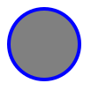

<!--
    SVG

    É uma marcação, estilo html, mas não é para textos, e sim para fazer imagens.
    Possuimos elementos para gerar formas

    Para entender melhor
    - Imagem rasterizada x Imagem vetorizada

    Benefícios
    - Mais leve
    - Mais detalhada
    - Maior acessibilidade e SEO
    - Pode ser editada via CSS ou atributos

    Desvantagens
    - Pode ser mais complicado de trabalhar
    - Quanto mais complexa a imagem, mais trabalho para o navegador
    - Navegadores mais antigos não possuem suporte para essa tag

    Para fotografias, ainda prefira usar imagens rasterizadas.

-->

<h1>PNG VS SVG</h1>

<h3>PNG</h3>


<h3>SVG</h3>


<h3>Circle in svg</h3>

<svg style="background-color: grey;" width="100" height="100">
    <circle cx="50" cy="50" r="40" stroke="blue" stroke-width="4" fill="grey" />
</svg>

<h3>Others</h3>

<svg width="100" height="120">
    <circle cx="0" cy="0" r="80" stroke="blue" stroke-width="4" fill="grey" />
</svg>
<br>
<svg width="300" height="200">
    <rect stroke="blue" width="100%" height="100%" stroke-width="4" fill="grey" />
</svg>
<br>
